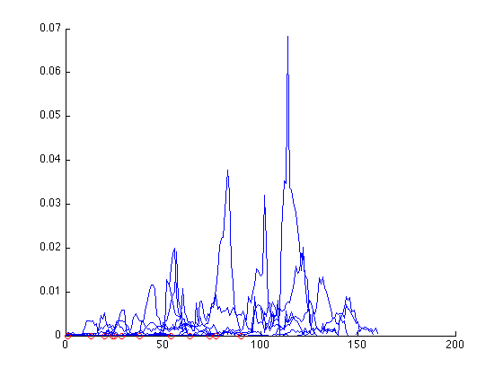

clear all
dist = @(x,y) sqrt((x(1,:)-y(1)).^2 + (x(2,:)-y(2)).^2 + (x(3,:)-y(3)).^2);
if ismac
matdirectory = '/Users/alex/Dropbox/resuspension/2011/trajectories(186-194)';
else
matdirectory ='C:\Users\hadar\Dropbox\resuspension\2011\trajectories(186-194)';
end
large_ones = dir(fullfile(matdirectory,'large*'));
time_of_event = {};
data_large = {};
data_small = {};
R = 10;
for kFiles = 1:12
filename = large_ones(kFiles).name;
[path,filename,ext] = fileparts(filename);
large = load(fullfile(matdirectory,filename));
large = large.(filename);
events = load(fullfile(matdirectory,strrep(filename,'large','events')));
small = load(fullfile(matdirectory,strrep(filename,'large','small')));
small = small.(strrep(filename,'large','small'));
numEvents = size(events.events,1);
numSmallTraj = length(small);
trajIds = unique(cat(1,large.trajid));
for iEvents = 1:numEvents
time_of_event{kFiles,iEvents} = events.events(iEvents,2);
trajind = trajIds == events.events(iEvents,1);
data = large(trajind);
for ind = 1:length(data.t)
xp = data.xf(ind);
yp = data.yf(ind);
zp = data.zf(ind);
up = data.uf(ind);
vp = data.vf(ind);
wp = data.wf(ind);
kinetic_energy_p = 1/3* (up^2 + vp^2 + wp^2 );
data_large{kFiles,iEvents,ind} = kinetic_energy_p;
counter = 0;
tmp_kinetic_energy = 0;
for j = 1:numSmallTraj
distance = dist([small(j).xf,small(j).yf,small(j).zf]',[xp,yp,zp])';
relevant = find(small(j).t == data.t(ind) & distance <= R);
if ~isempty(relevant)
tmp = small(j);
tmp.uf = tmp.uf(relevant);
tmp.vf = tmp.vf(relevant);
tmp.wf = tmp.wf(relevant);
tmp_kinetic_energy = tmp_kinetic_energy +1/3 *(tmp.uf^2+ tmp.vf^2 + tmp.wf^2);
counter = counter + 1;
end
end
data_small{kFiles,iEvents,ind} = tmp_kinetic_energy / counter;
time_data_small{kFiles, iEvents,ind} = data.t(ind);
end
end
end
save kinetic_energy_copy.mat
figure, hold on,
for kFiles = 1:size(data_small,1)
for iEvents = 1:size(data_small,2)
if ~isempty([time_of_event{kFiles,iEvents}])
plot([time_data_small{kFiles,iEvents,:}]-[time_data_small{kFiles,iEvents,1}],[data_small{kFiles,iEvents,:}]);
plot([time_of_event{kFiles,iEvents}]-[time_data_small{kFiles,iEvents,1}],0,'ro');
end
end
end
hold off
